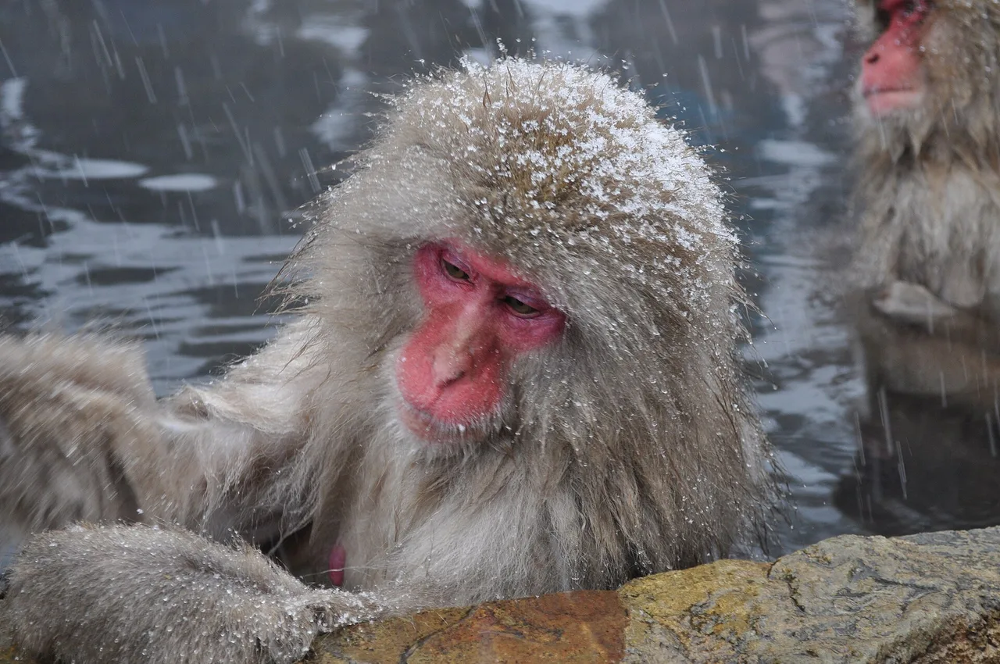

Wildlife watching in Japan: a naturalist's guide by region
Most travel guides send you to temples and ramen. But Japan is also one of Asia's great wildlife destinations — a long, mountainous archipelago from the drift ice of Hokkaidō to the coral reefs of Okinawa, packed with endemic species you can see nowhere else on Earth. This guide is written by a field ecologist: where to go, what you'll actually see, the season that matters, and how to get there. Skip the listicle filler — this is the real map.

Some links here are affiliate links to general-interest tours and travel services — if you book, we may earn a commission at no extra cost to you. For serious birders and entomologists, a dedicated local specialist guide will always beat a generic tour; we flag where that's worth it. The wildlife information below is independent of any commission.
We are naturalists, not a tour operator. Always check current access rules — some sites have seasonal closures or protected-area restrictions.
Where to go, by what you want to see
| If you want to see… | Go to… | Best season | Plan a tour |
|---|---|---|---|
| Red-crowned cranes, Steller's sea eagles, drift ice | Eastern Hokkaidō (Kushiro, Rausu, Notsuke) | Dec–Feb | Hokkaidō tours → |
| Snow monkeys in a hot spring | Jigokudani, Nagano | Dec–Mar (best in snow) | Snow monkey tours → |
| Endemic island species (Okinawa rail, Yambaru) | Northern Okinawa & Amami (Kagoshima) | Year-round (night tours best) | Yambaru night tours → |
| Thousands of wintering cranes | Izumi, Kagoshima | Nov–Feb | Kagoshima tours → |
| Whales & dolphins | Okinawa (humpback), Ogasawara, Kōchi | Jan–Mar (humpback) | Whale watching → |
| Beetles, fireflies & forest insects | Satoyama woodland nationwide | Jun–Aug (summer nights) | See species by prefecture → |
The regions, in detail
Eastern Hokkaidō — cranes, sea eagles, and drift ice
This is the single richest wildlife destination in Japan, and the season is winter. Around Kushiro, the red-crowned crane (Grus japonensis, tanchō) — once nearly extinct in Japan — gathers at feeding sites and performs its famous courtship dance against the snow. Further east at Rausu on the Shiretoko Peninsula, winter boat trips drift among pack ice carrying Steller's sea eagles (Haliaeetus pelagicus) and white-tailed eagles — one of the great raptor spectacles on the planet. Night tours near Rausu also offer a chance at the colossal Blakiston's fish owl, the world's largest owl and a true bucket-list bird.
Get there: fly to Kushiro (KUH) or Memanbetsu (MMB), then rent a car — sites are spread out and there is little public transport in winter. A 4WD and proper winter tyres are essential.
Nagano — snow monkeys at Jigokudani
The Japanese macaque (Macaca fuscata) is the northern-most non-human primate on Earth, and at Jigokudani Monkey Park a troop bathes in a natural hot spring through the winter. It's touristy, yes — but it's also genuine wild behaviour, and the snow-framed shots are unforgettable. Pair it with the great Zenkō-ji temple in Nagano city. Spring and autumn work too, but the monkeys use the bath most in deep cold.
Yambaru & Amami — Japan's endemic islands
The subtropical forests of northern Okinawa (Yambaru) and the island of Amami-Ōshima (Kagoshima) were inscribed as a UNESCO World Heritage site in 2021 for their extraordinary endemism. This is where you find the flightless Okinawa rail (Hypotaenidia okinawae, yanbaru kuina), the nocturnal Amami rabbit (Pentalagus furnessi) — a "living fossil" found on just two islands — and the Ryukyu robin. A guided night safari by car is the way to see them; rabbits, frogs, and rails cross forest roads after dark. Daytime, the reefs offer some of Japan's best snorkelling.
Izumi, Kagoshima — the world's biggest crane wintering ground
Each winter, more than 10,000 cranes — mostly hooded and white-naped cranes — descend on the reclaimed farmland of Izumi in northern Kagoshima. It is one of the largest crane concentrations on Earth and a globally important site for these threatened species. An observation centre lets you watch the dawn fly-in. Combine it with the active volcano of Sakurajima across Kagoshima Bay.
Summer nights — beetles & fireflies in the satoyama
No insect is more woven into Japanese childhood than the kabutomushi (rhinoceros beetle) and kuwagata (stag beetle). On summer nights across the country's satoyama — the mosaic of woodland and rice-farming countryside — these giants gather at sap-oozing oak trees (look for kunugi and konara oaks). June brings the magical drift of genji firefly (Luciola cruciata) over clean streams. You don't need a tour for either; you need a head-torch, a quiet rural valley, and patience. Our Ikimono Quest ranks all 47 prefectures by recorded species, so you can pick a base with a rich local fauna.
Do you need a guide — or just a rental car?
Honest answer: it depends on the target. For the Hokkaidō winter raptors and the Yambaru/Amami night species, a local guide dramatically raises your odds and keeps you on the right side of protected-area rules — worth every yen. For snow monkeys, Izumi cranes, and summer beetles, the sites are accessible and self-guided works fine. A rental car is the single biggest unlock for serious wildlife travel in Japan: the best sites are rural and thin on public transport.
Almost everything on this page — cranes, sea eagles, snow monkeys at a respectful distance — is better through 8x42 binoculars, and Japan's own optics makers are the classic choice. Nikon's Prostaff line is the standard waterproof mid-range pick.
The "Check price" link is an affiliate link (Amazon). We may earn a small commission at no extra cost to you, and it never changes what we recommend.
A wildlife calendar for Japan
The best wildlife sites are remote, so two things matter: staying connected for maps and weather, and getting to areas the trains don't reach.
Common questions
Q. When is the best time for wildlife watching in Japan?
A. Winter (December–February) is the headline season: red-crowned cranes and Steller's sea eagles in eastern Hokkaidō, snow monkeys in Nagano, 10,000+ wintering cranes at Izumi, and humpback whales off Okinawa. Summer nights are best for beetles and fireflies.
Q. Where can I see red-crowned cranes in Japan?
A. Around Kushiro in eastern Hokkaidō, where the resident tanchō population gathers at winter feeding sites and performs its courtship dance in the snow.
Q. What animals are endemic to Japan?
A. Many, especially on the southern islands: the Okinawa rail and Amami rabbit (Yambaru and Amami, a UNESCO World Heritage site), the Japanese macaque, the Japanese giant salamander, and the Tsushima leopard cat, among others.
Q. Do I need a tour, or can I go independently?
A. For winter raptors in Hokkaidō and night species on Okinawa/Amami, a local guide greatly improves your chances and keeps you compliant with protected-area rules. For snow monkeys, the Izumi cranes, and summer insects, self-guided with a rental car works well.
Q. Can I catch beetles in Japan?
A. Rhinoceros and stag beetles are a beloved summer tradition, found at sap-oozing oak trees in rural satoyama woodland on summer nights. Always follow local rules — collecting is restricted in national parks and protected areas.
Pick a region and read the free prefecture guide: Hokkaidō · Nagano · Okinawa · Kagoshima · Kōchi. Or see the data: our Ikimono Quest ranks all 47 prefectures by recorded species richness from GBIF citizen-science data. Curious why these animals look the way they do? Read the science of animal colour in Japan.
How we choose: we describe sites and species from field experience and open biodiversity data (GBIF, IUCN Red List). Affiliate commissions never change our recommendations or what you pay. Wildlife viewing carries real risks (cold, terrain, wild animals) — follow local guidance and protected-area rules.